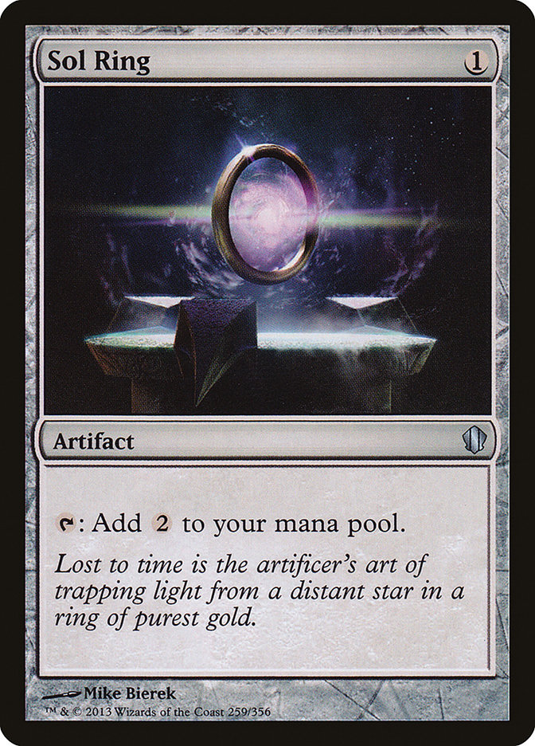
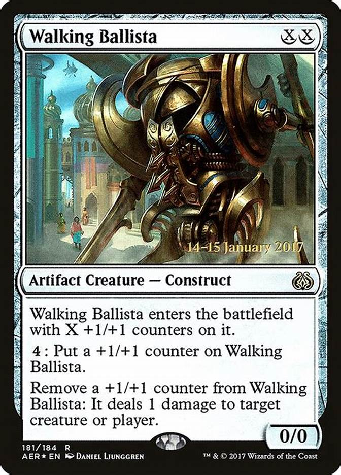
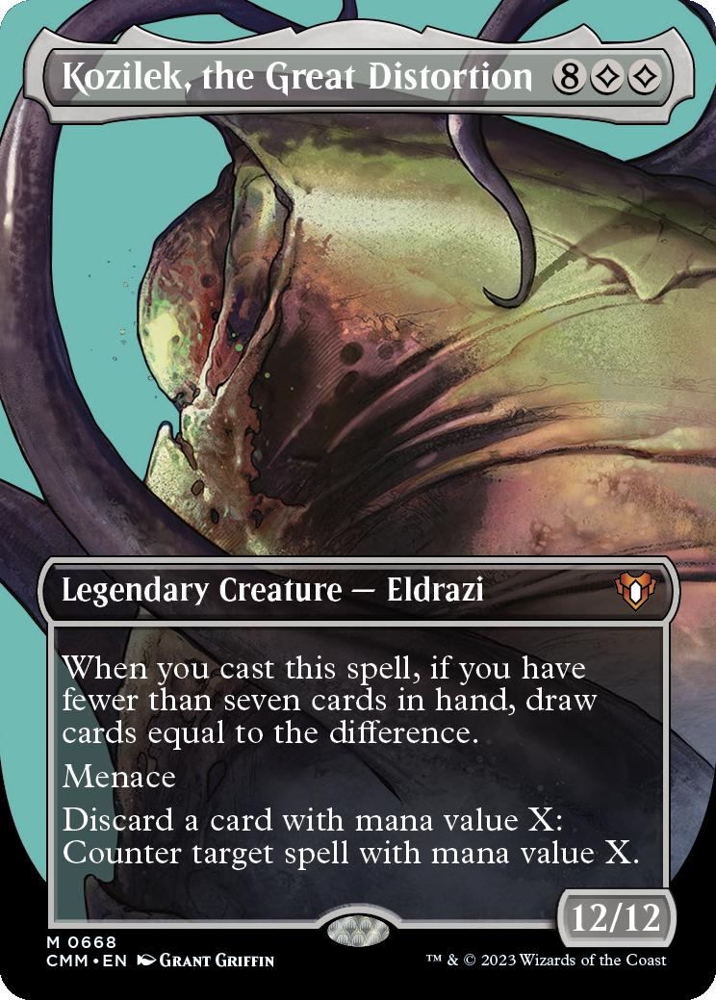
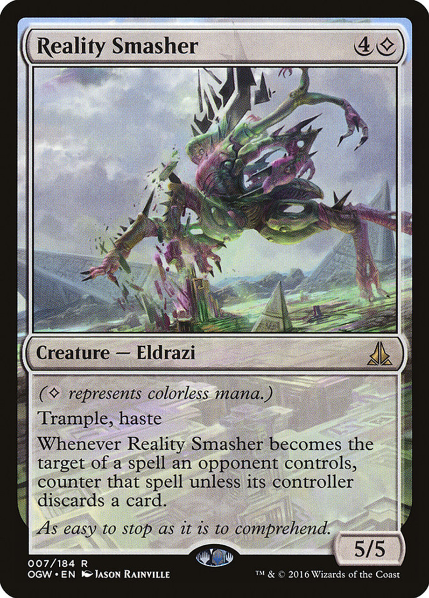
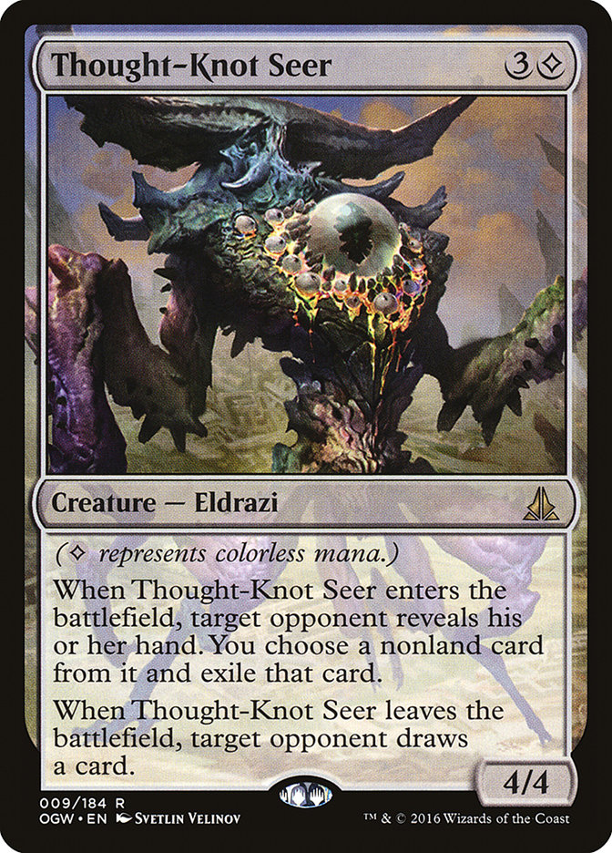

Incolor Comum: Neutralidade e flexibilidade
Teoria:
O incolor comum é representado por cartas que não possuem uma identidade específica de cor, mas que podem ser usadas por qualquer jogador independentemente do mana gerado. Elas oferecem opções versáteis e geralmente focam em mecânicas simples ou genéricas.
Na prática:
Cartas incolores comuns são ótimas para preencher lacunas em estratégias. Elas podem fornecer artefatos utilitários, criaturas com habilidades básicas ou terrenos que ajudam na fixação de mana.
Exemplo de cartas:
Sol Ring: Gera mana extra, útil em qualquer deck.
Walking Ballista: Uma criatura flexível que pode crescer ao longo do jogo. Mana Vault: Um acelerador de mana poderoso.



Obrigatória (Cor "Incolor" Verdadeira) Forças alienígenas e o poder do vazio
Teoria:
Essa categoria refere-se principalmente aos Eldrazi e outras cartas que possuem o símbolo de mana incolor (◇). Elas representam forças externas ao ciclo natural das cores, geralmente com habilidades e poderes que vão além do que o mana colorido pode proporcionar. A "obrigação" de usar mana incolor é uma característica que destaca seu conceito alienígena e diferenciado.
Na prática:
Cartas com mana incolor obrigatório exigem mana específico (◇), o que pode tornar sua inclusão um desafio. Elas geralmente são muito poderosas, com efeitos devastadores no jogo ou criaturas gigantescas que mudam o ritmo da partida.
Exemplo de cartas:
Kozilek, the great distortion: Um Eldrazi que compra cartas e anula mágicas.
Reality Smasher: Uma criatura Eldrazi agressiva com resistência a remoções.
Thought-Knot Seer: Uma criatura que interfere na mão do oponente, atrapalhando seus planos.


